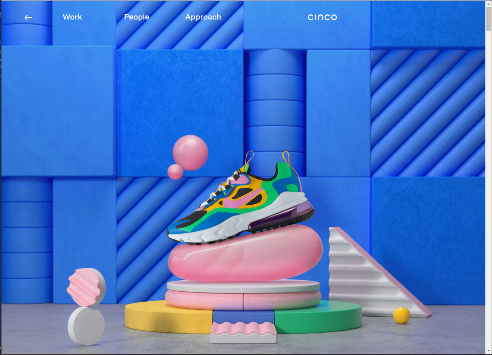

Alignment
Disney
Disney.comDisney has alwas been known for its "Magic" and its no wonder that there pages is magicly aligned vary well.
Repetition
Adidas
Adidas.comAdidas shows that looking sports wear in Repetition can be fun and look nice if done right on the page.
Contrast
cinco design
Cinco.com this site struck out at me as beaing one the used color to take the viewer to a live vibrent place.